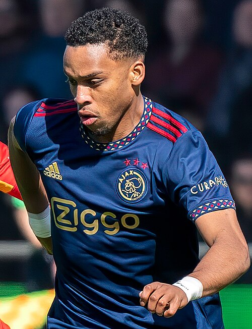

Ezzcoins › Player pages › Jurriën Timber
84
RB

Timber
Arsenal
Photo (cropped): Carlo Bruil Fotografie · CC BY 2.0 · Wikimedia Commons
Photo source
https://commons.wikimedia.org/wiki/File:JURRIEN_TIMBER.jpg
Licence: https://creativecommons.org/licenses/by/2.0
Jurriën Timber
84 RB · Arsenal · Premier League ·  Holland
Holland
No console price yet. Cards rated 84 or higher are priced in turns through the day.
PAC76
SHO48
PAS76
DRI78
DEF83
PHY78
- Position
- RB (also LB, CB, RM)
- Club
- Arsenal
- League
- Premier League
- Nation
- Holland
- Skill moves
- 3★
- Weak foot
- 3★
- Preferred foot
- Right
- PlayStyles+
- Jockey+
More from Arsenal
- 89
 GabrielCB
GabrielCB - 89
 MarionaCM
MarionaCM - 88
 Alessia RussoST
Alessia RussoST - 88David RayaGK
- 88Declan RiceCDM
- 88
 William SalibaCB
William SalibaCB - 87Bukayo SakaRW
- 87Ona BatlleRB